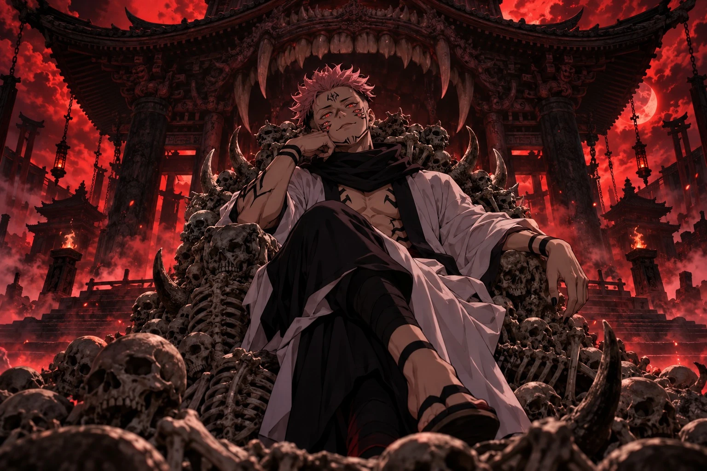

JujutsuKaisen
両面宿儺 Ryomen Sukuna — King of Curses
Scroll
領域展開
Domain Expansion
五条悟 Satoru Gojo
The strongest.
“Throughout heaven and earth, I alone am the honored one.”
Domain Expansion
InfiniteVoid.
Infinite information, all at once. The mind never finishes its first thought.
The cast
Three domains.
One page.
- 01Ryomen Sukuna伏魔御厨子 Malevolent Shrine
- 02Satoru Gojo無量空処 Infinite Void
- 03Nobara Kugisaki共鳴り Resonance